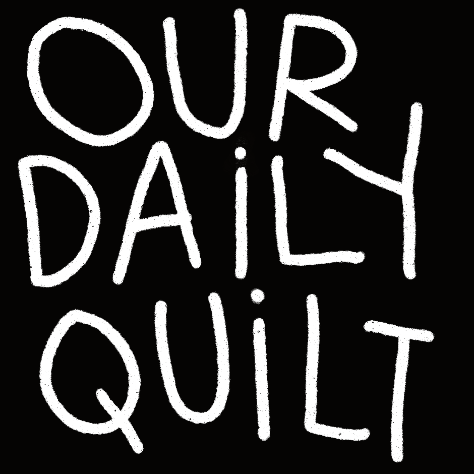
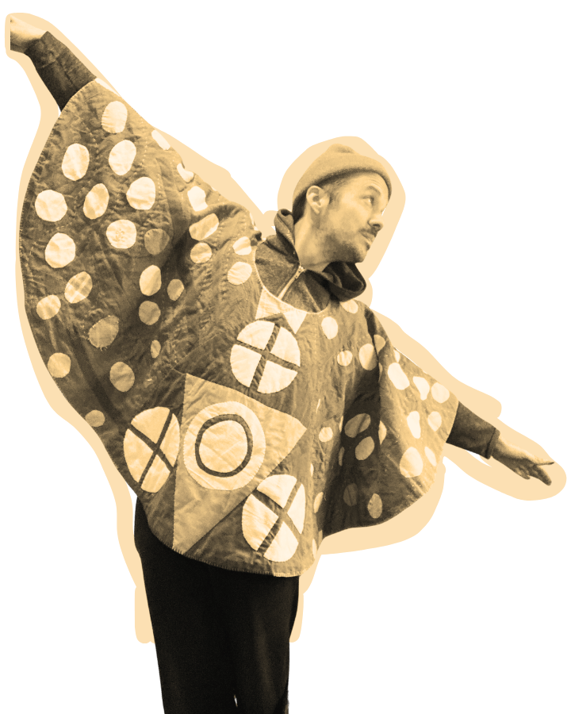

What’s your first name?
Read today’s quote
A single thought to sit with
Choose your color
Whichever color comes to mind
Watch the quilt grow
See what everyone is feeling today
Here’s our quote for today
Today’s Most Popular Color
Why do you think this color is so popular today?
Long Tap to Share on Instagram
Preparing preview…
Before you go
A small practice
A companion piece
Many hands
YOUR MILESTONE QUILTS
Each quilt below is made from your colors as of that milestone — sent your way as a thank-you for showing up.
YOUR COLORS
WHO WAS HERE
ARCHIVE
REFLECTION ARCHIVE
Past quotes, questions, and what people shared in response — distilled into a few of the best ideas from each day.
Submit a quote
Sometime today, people in the middle of their own lives will read the same words and choose a color that feels true. Those colors become a quilt. Then it’s gone. And tomorrow we start again.
About the maker
I’m Zak. I made this because I wanted a place where people could make something beautiful together when we pause long enough to let something good land.

Want more?
-
Let’s make a REAL (tiny) quilt!
 Watch on YouTube
Watch on YouTube
- The Quilty Nook a space where quilt-adjacent makers find their people
- The World Needs Your Next Quilt! my book on how to tell stories with your quilts
- Seamside my podcast on the inner work of textiles
- @zakfoster.quilts where I share my own making
- Website my work and more
- Free Stuff lot of goodies here for creative folks
- Privacy Policy Support
Here's a question to sit with quietly or free-write in a journal — set a timer, fill some pages, write by hand or type.
Here's the quote again if it helps